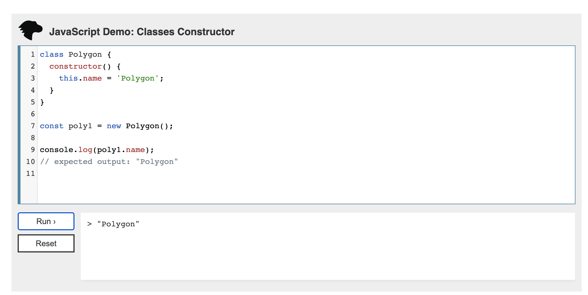
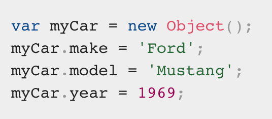
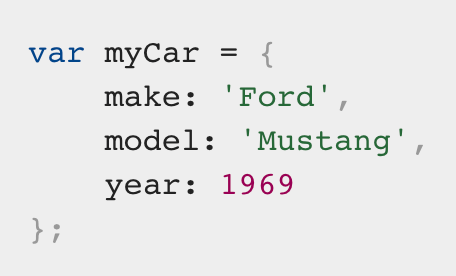
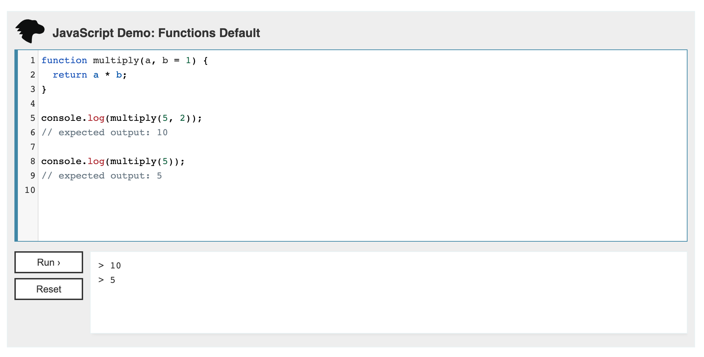
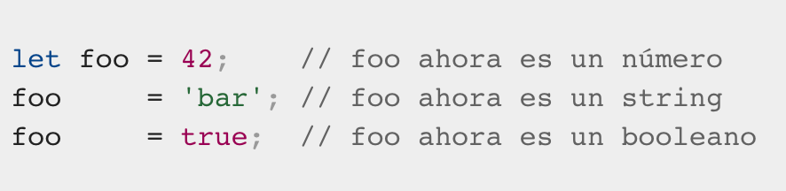
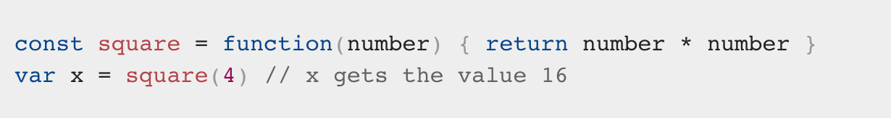

Programación de Aplicaciones Telemáticas
Tema 5: Javascript
Agenda
- Introducción
- Core Language
- Javascript & Web Browser
- Formularios Web
- Referencias
Sesión 1: Javascript Core
Introducción
- Creado por Brendan Einch (co-founder of the Mozilla Project)
- JavaScript (JS) es un lenguaje de programación ligero, interpretado, o compilado justo-a-tiempo (just-in-time)
- Es más conocido como un lenguaje de scripting
- JavaScript es un lenguaje de programación basada en prototipos
- Utilizado no solo en Navegadores Web (Por ejemplo NodeJS)
Introducción
- No confundir JavaScript con el lenguaje de programación Java
- Ambos lenguajes de programación tienen sintaxis, semántica y usos muy diferentes
- Multiparadigma, de un solo hilo, dinámico, con soporte para programación orientada a objetos, imperativa y declarativa (por ejemplo programación funcional)
Core Language
- Objetos, Tipos y Variables
- Expresiones y Operadores
- Sentencias y Declaraciones
- Funciones
- Expresiones Regulares (Match Data)
Objetos, Tipos y Variables
Objetos
Objetos, Tipos y Variables
Tipos
Tipos de Datos:
- undefined : typeof instance === "undefined"
- Boolean : typeof instance === "boolean"
- Number : typeof instance === "number"
- String : typeof instance === "string"
- BigInt : typeof instance === "bigint"
- Symbol : typeof instance === "symbol"
Objetos, Tipos y Variables
Tipos
Tipos de Datos:
- Objectos : typeof instance === "object"
- Funciones : No es una estructura, devuelve un Tipo de Datos
Estructuras de Datos: new Object, new Array, new Map, new Set, new WeakMap, new WeakSet, new Date
Objetos, Tipos y Variables
Tipos (Objetos)
 Objetos, Tipos y Variables
Tipos (Funciones)
Objetos, Tipos y Variables
Tipos (Propiedades de Valor)
- Infinity
- NaN
- undefined
- null
- globalThis
Objetos, Tipos y Variables
Tipos (Propiedades de Funciones)
- eval()
- uneval()
- isFinite()
- isNaN()
- parseFloat()
- parseInt()
Objetos, Tipos y Variables
Tipos (Propiedades de Funciones)
- decodeURI()
- decodeURIComponent()
- encodeURI()
- encodeURIComponent()
- escape()
- unescape()
Objetos, Tipos y Variables
Tipos (Objetos Fundamentales)
- Object
- Function
- Boolean
- Symbol
- Error
- EvalError
Objetos, Tipos y Variables
Tipos (Objetos Fundamentales)
- InternalError
- RangeError
- ReferenceError
- SyntaxError
- TypeError
- URIError
Objetos, Tipos y Variables
Tipos (Números y Fechas)
- Number
- BigInt
- Math
- Date
Objetos, Tipos y Variables
Tipos (Texto)
- String
- RegExp
Objetos, Tipos y Variables
Tipos (Colecciones Indexadas)
- Array
- Int8Array
- Uint8Array
- Uint8ClampedArray
- Int16Array
- Uint16Array
Objetos, Tipos y Variables
Tipos (Colecciones Indexadas)
- Int32Array
- Uint32Array
- Float32Array
- Float64Array
- BigInt64Array
- BigUint64Array
Objetos, Tipos y Variables
Tipos (Colecciones con Clave)
- Map
- Set
- WeakMap
- WeakSet
Objetos, Tipos y Variables
Tipos (Datos Estructurados)
- ArrayBuffer
- SharedArrayBuffer
- Atomics
- DataView
- JSON
Objetos, Tipos y Variables
Tipos (Abstracción de Control)
- Promise
- Generator
- GeneratorFunction
- AsyncFunction
Objetos, Tipos y Variables
Tipos (Reflexion)
- Reflect
- Proxy
Objetos, Tipos y Variables
Variables y Constantes
Variables son contenedores que almacenan valores (Objetos)
- var
- let
- const
Objetos, Tipos y Variables
Variables y Constantes
Expresiones y Operadores
- Operadores de asignación
- Operadores de comparación
- Operadores aritmeticos
- Operadores bit a bit
- Operadores lógicos
- Operadores de cadenas de texto
- Operador condicional
- Operador coma
- Operadores unarios
- Operadores relacionales
Expresiones y Operadores
Operadores de asignación
Un operador de asignación asigna un valor a su operando izquierdo basándose en el valor de su operando derecho. El operador de asignación simple es igual (=), que asigna el valor de su operando derecho a su operando izquierdo. Es decir, x = y asigna el valor de y a x
Expresiones y Operadores
Operadores de comparación
Un operador de comparación compara sus operandos y devuelve un valor lógico en función de si la comparación es verdadera (true) o falsa (false). Los operandos pueden ser valores numéricos, de cadena, lógicos u objetos.
Expresiones y Operadores
Operadores aritmeticos
Un operador aritmético toma valores numéricos (ya sean literales o variables) como sus operandos y devuelve un solo valor numérico. Los operadores aritméticos estándar son suma (+), resta (-), multiplicación (*) y división (/). Estos operadores funcionan como lo hacen en la mayoría de los otros lenguajes de programación cuando se usan con números de punto flotante (en particular, ten en cuenta que la división entre cero produce Infinity).
Expresiones y Operadores
Operadores bit a bit
Un operador bit a bit trata a sus operandos como un conjunto de 32 bits (ceros y unos), en lugar de números decimales, hexadecimales u octales.
Expresiones y Operadores
Operadores lógicos
Los operadores lógicos se utilizan normalmente con valores booleanos (lógicos); cuando lo son, devuelven un valor booleano. Sin embargo, los operadores && y || en realidad devuelven el valor de uno de los operandos especificados, por lo que si estos operadores se utilizan con valores no booleanos, pueden devolver un valor no booleano.
Expresiones y Operadores
Operadores de cadenas de texto
Además de los operadores de comparación, que se pueden usar en valores de cadena, el operador de concatenación (+) concatena dos valores de cadena, devolviendo otra cadena que es la unión de los dos operandos de cadena.
Expresiones y Operadores
Operador condicional
El operador condicional es el único operador de JavaScript que toma tres operandos. El operador puede tener uno de dos valores según una condición. La sintaxis es:
condition ? val1 : val2
Expresiones y Operadores
Operador coma
El operador coma (,) simplemente evalúa ambos operandos y devuelve el valor del último operando. Este operador se utiliza principalmente dentro de un bucle for, para permitir que se actualicen múltiples variables cada vez a través del bucle.
Expresiones y Operadores
Operadores unarios
Una operación unaria es una operación con un solo operando.
Expresiones y Operadores
Operadores relacionales
Un operador relacional compara sus operandos y devuelve un valor Boolean basado en si la comparación es verdadera.
Sentencias y Declaraciones
- Control de flujo
- Declaraciones
- Funciones
- Iteraciones
Sentencias y Declaraciones
Control de flujo
- Block: Un bloque de sentencias se utiliza para agrupar cero o mas sentencias. El bloque se delimita por un par de llaves
- break: Finaliza la sentencia actual loop, switch, o label y transfiere el control del programa a la siguiente sentencia de la sentencia finalizada
- continue: Finaliza la ejecucion de las sentencias dentro de la iteracion actual del actual bucle, y continua la ejecucion del bucle con la siguiente iteracion
Sentencias y Declaraciones
Control de flujo
- Empty: Una sentencia vacía se utiliza para proveer una "no sentencia", aunque la sintaxis de JavaScript esperaba una
- if...else: Ejecuta una sentencia si una condición especificada es true. Si la condición es false, otra sentencia puede ser ejecutada
- switch: Evalua una expresión, igualando el valor de la expresión a una clausula case y ejecuta las sentencias asociadas con dicho case
Sentencias y Declaraciones
Control de flujo
- throw: Lanza una excepción definida por el usuario
- try...catch: Marca un bloque de sentencias para ser probadas (try) y especifica una respuesta, en caso de que se lance una excepción
Sentencias y Declaraciones
Declaraciones
- var: Declara una variable, opcionalmente inicializándola a un valor
- let: Declara una variable local de ambito de bloque, opcionalmente inicializándola a un valor
- const: Declara una constante de solo lectura
Sentencias y Declaraciones
Funciones
- function: Declara una función con los parámetros especificados
- function*: Los generadores de funciones permiten escribir iteradores con mas facilidad
- async function: Declara una función asíncrona con los parámetros especificados
Sentencias y Declaraciones
Funciones
- return: Especifica el valor a ser retornado por una función
- class: Declara una clase
Sentencias y Declaraciones
Iteraciones
- do...while: Crea un bucle que ejecuta una instrucción especificada hasta que la condición de prueba se evalúa como falsa. La instrucción especificada se ejecute al menos una vez
- for: Crea un bucle que consiste en 3 parametros opciones, seguido del bloque a ejecutar en cada iteración
- for each...in: Itera una variable especificada sobre todos los valores de las propiedades del objeto
Sentencias y Declaraciones
Iteraciones
- for...in: Itera sobre las propiedades enumerables de un objeto, en orden albitrario. Para cada propiedad distinta, las instrucciones pueden ser ejecutadas
- for...of: Ejecuta un bloque de código para cada elemento de un objeto iterable, como lo son: String, Array
- while: Crea un bucle que ejecuta la instrucción especificada siempre que la condición de prueba se evalúe como verdadera. La condición se evalúa antes de ejecutar la instrucción
Funciones
- Declaración
- Expresiones
- Alcance
- Parametros
Funciones
Declaración
-
Una función esta compuesta de los siguientes elementos:
- Nombre de la función
- Listado de parametros separados entre "comas"
- Instrucciones de la función separado por "{....}"
Funciones
Expresiones
Las funciones se pueden declarar como expresiones: 
Funciones
Alcance
Variables definidas dentro de una funcion no son visibles fuera, pero una función puede acceder a todas las variables y funciones definidas en el mismo "scope"
Funciones
Parámetros
- Los valores de los parámetros por defecto son "undefined"
- El número de parámetros puede ser dinámico
- Los parámetros no tienen que ser variables, pueden ser también objetos
Pattern Matching with Regular Expressions
Las expresiones regulares son patrones que se utilizan para hacer coincidir combinaciones de caracteres en cadenas. En JavaScript, las expresiones regulares también son objetos.
Estos patrones se utilizan con los métodos exec() y test() de RegExp, y con match(), matchAll(), replace(), replaceAll(), search() y split() métodos de String.
Sesión 2: Javascript & Web Browser
Javascript & Web Browser
- The Window Object
- Handling Events
- Scripted HTTP
- Client-Side Storage
- HTML5 APIs
The Window Object
Handling Events
Scripted HTTP
Client-Side Storage
HTML5 APIs
Formularios Web
- Estructura de un formulario web
- Ajax
- Asynchronous JavaScript
Formularios Web
Estructura de un formulario web
Formularios Web
Ajax
Formularios Web
Asynchronous JavaScript
Referencias
Sesión 1:
- https://www.ecma-international.org/publications/standards/Ecma-262.htm
- https://developer.mozilla.org/en-US/docs/Web/JavaScript/Guide
- https://www.oreilly.com/library/view/javascript-the-definitive/9781491952016/
- https://eloquentjavascript.net/
- https://js.do/